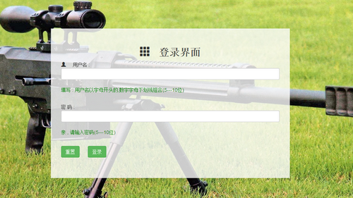
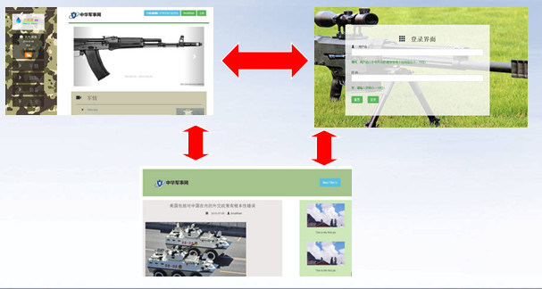
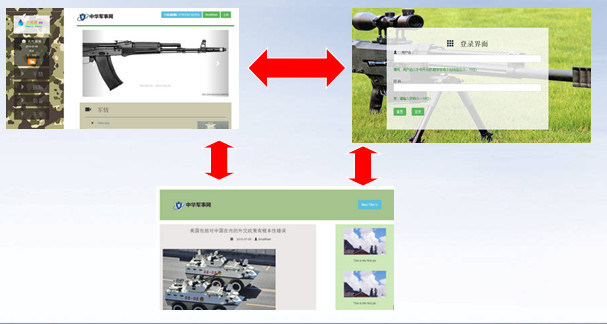

1. 小雨滴团队
- 张 雨 :
- 张兵帅 :
- 何晓东 :

- 马政吉 :
- 次旦顿珠:
- 4 . 功能模块图
5 . 技术框架
技术 : html css js jquery php mysql
难点: 数据库设计.网站部署
核心 : BootStrap ThinkPHP
技术 : html css js jquery php mysql
难点: 数据库设计.网站部署
6 . 小组成员负责功能介绍
张兵帅：注册.登录.内容发布

何晓东：首页的整体布局与编码
张雨：二级页面的设计与布局
马政吉：：整体布局，各级页面的链接


次旦顿珠：
404页面的设计与编码
404页面的设计与编码